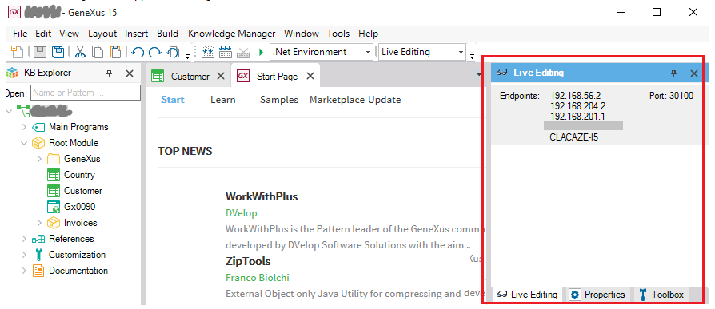

Live Editing in Web Applications
Upon changing the style settings in the Theme Editor inside the GeneXus IDE, see the changes at runtime without pressing F5. You don't need to build any object to see the appearance changes made to the Theme! All the style changes are reflected directly in the application running on the device or the web browser. Agile prototyping!Live Editing allows the designer to change the Theme settings and immediately see those changes without building the application. If the changes are good for you, you can save them; otherwise, change the settings until they are good enough without doing any build operation. Remember that the best preview for design time is running the application on the device itself, because you are seeing exactly what the end user will see: the data is available, and all the specific features of the device screen are present. How to activate Live Editing1. Go to the Configuration combo box inside the GeneXus IDE, and set its value to Live Editing.
The Live Editing tab opens to the right of the IDE. The errors and messages are thrown to the GeneXus output.  2. Run F5 or Run with this only (only for the first time), in order to enable Live Editing.
3. Open the Theme in GeneXus, change any of the class properties, and without saving see how the changes are reflected in the device or browser. Example in a web applicationIn this example, we are going to change the background and fore colors of the Delete button of a web transaction. The corresponding Theme class is BtnDelete. So, we just open the Theme and change the background color for this class: After that, without saving or building, the changes are reflected in the browser:
Implementation details for the web:
|


| Backlinks |
| Toc:Live Editing |